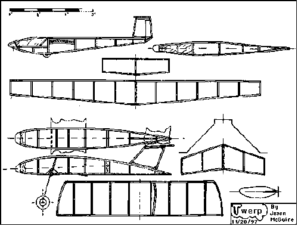

|
Jason's 2 Twerp prototypes have spans of 6" and 4" respectively. With remarkable ease, he has flown these models in both his living room, and Hangar One at Moffett Field. Covered with airbrushed polymicro, they are exceptional in appearance and performance. Pix of the 4" span model are in Jason's Hangar. This plan is also a 2 for one deal. It includes not only the Twerp, but also the scale-like sailplane it is intended to tow to altitude. Prototypes are flying and releasing well.
For reference when printed, the wingspan of the Twerp should be 6", the span of the glider, proportionally larger. Of course you can scale them to any size you want, Jason's 4" Twerp flies great as well. |
To download a 53kb plan, click here
Copyright 1998, Thayer Syme. All rights reserved